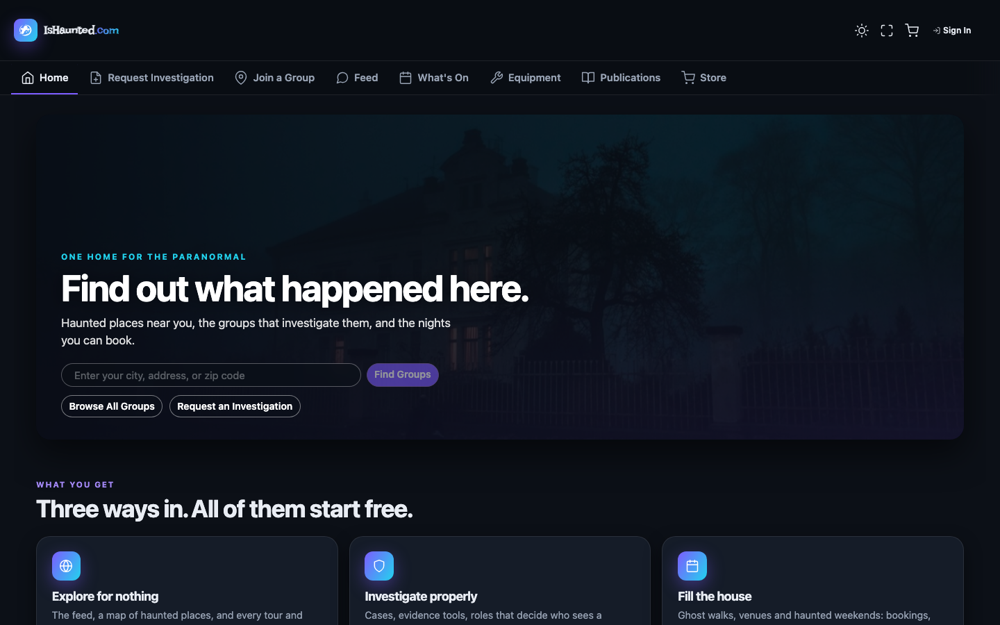
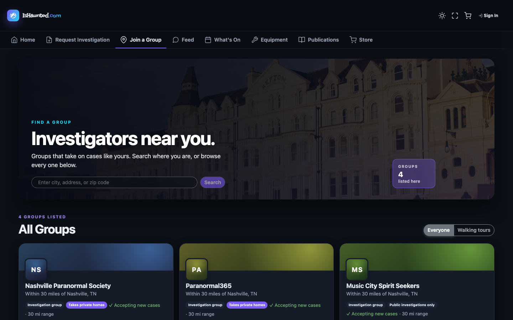
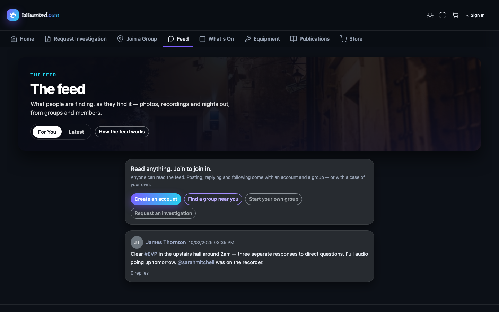
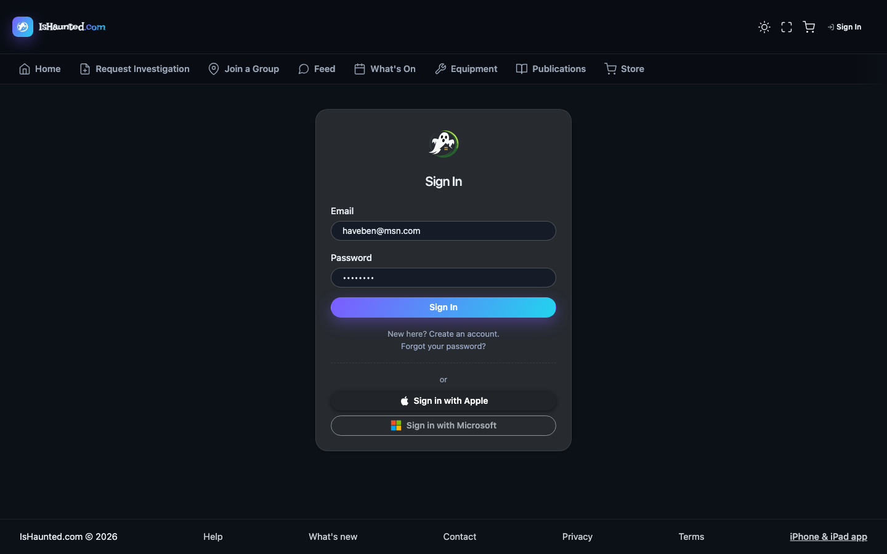
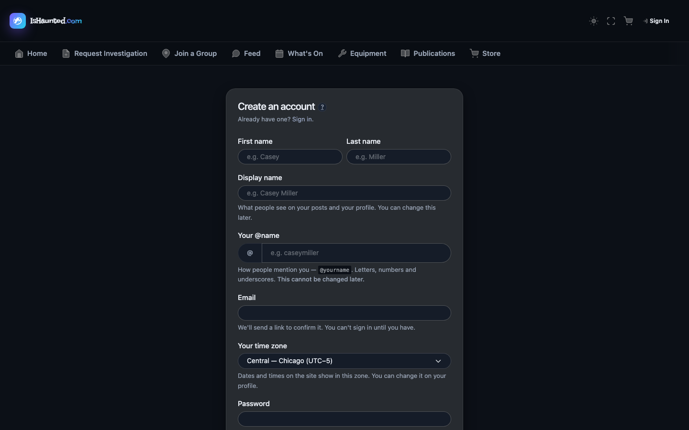
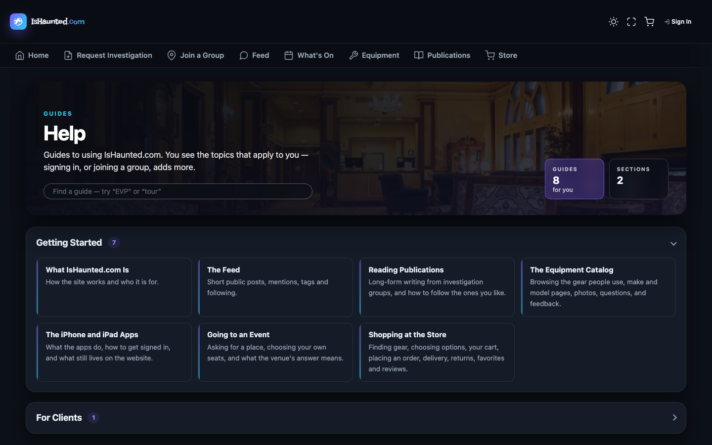
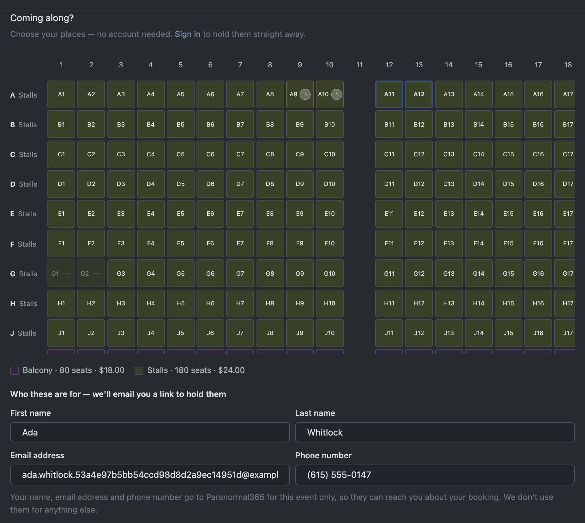
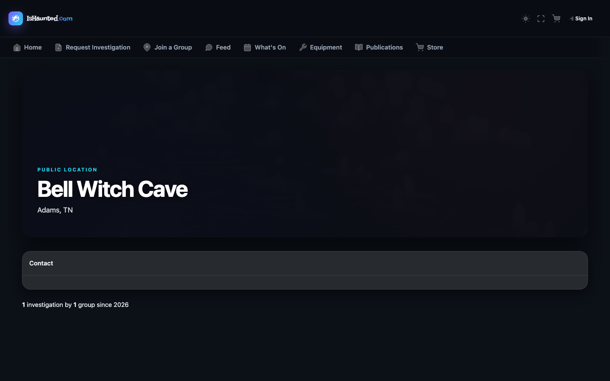
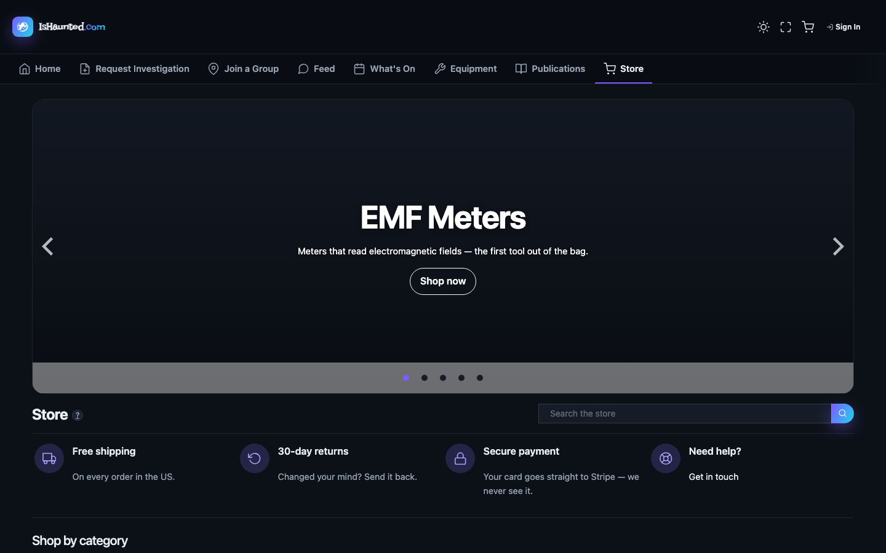

Somebody with no account, who arrived from a search or a link. Written for a developer joining the project.
WhoVisitor
Screens13
Captured10/05/2026
Every screenshot shows simulated, seeded data, captured in dark mode while signed in as this user type. Nothing here is a real person, case or investigation. Where a page shows a refusal, that is the designed behavior for this seat.
ishaunted.comWebsite guide
The visitor is the largest audience and the one with the least patience. Everything they can
reach is public on purpose: the site's whole growth argument is that somebody researching a
haunted address finds a real archive rather than a sign-up wall.
What they can do: read the feed, browse public places and their archives, find groups near them,
read published investigations, and ask a group for help. What they cannot do is anything tied to an
identity — which is where the refusals below come from.
How this site decides what you may see
Two things gate every surface, and they are different questions:
Your seat in a group — owner, administrator, member, viewer — answers "may this person do
this?". The group's plan answers "does this group pay for this at all?". A member of a group
whose plan excludes an area is refused for a completely different reason than a viewer who is not
allowed to write, and the site says which.
A refusal is never rendered as "nothing here." An empty list and a server
saying no are different facts, and a page that shows the same gray nothing for both teaches people
to distrust it. Every list goes through LoadResult, which carries loading, empty,
refused, session-ended and rate-limited as distinct states — and every one of them has its own
words on screen.
This matters when reading this document: where a screenshot shows a refusal, that is the
designed behavior for this seat, not a broken page.
What this user sees, screen by screen
Home. The front door. Search by place, and what is near you.

Home
Find groups. Groups a person can approach, with what each one covers.

Find groups
Feed. The public feed. Reading is open to everyone; posting is not.

Feed
Request an investigation. The request flow — the main conversion path on the site.
Request an investigation
Sign in. Sign in, including Microsoft and Apple.

Sign in
Sign up. Registration. The @name is permanent and the form says so.

Sign up
Help. The in-app help, readable without an account.

Help
Refused my cases. A page that needs an account. Note it explains rather than showing an empty list — this is the refusal rule in action.
Refused my cases
A hosted event. A hosted event's public page (item 235): the venue's photographs, the nights, what is left, and how to get in and around.
A hosted event
Picking seats without an account. Seats picked with no account: the visitor is emailed a link to hold them, and nothing is held until they open it.

Picking seats without an account
A public place.

A public place
The store. The gear store's front (storefront). Nobody needs an account to buy. Hidden, menus and all, until the store is switched on — photographed switched on.

The store
A sellers item. An item a member makes and sells (store sellers): it ships from them, and its questions and answers sit after the reviews. Asking needs an account.